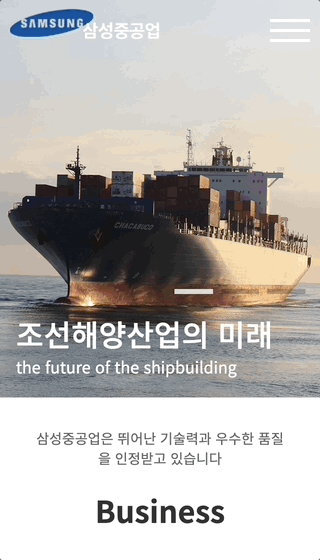
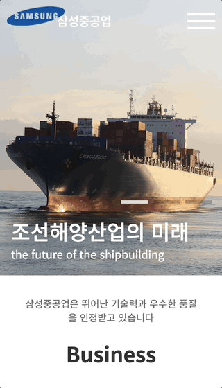

메인페이지 영역
- 안녕하세요 Web-Front-End Web-Publisher
- 지원자 양재문입니다.
Web-Front-End & Web-Publisher
Web-Front-End & Web-Publisher
HTML5, CSS3, JavaScript, React.js, Vue.js, jQuery, JSON(비동기처리), AJAX(비동기처리), Bootstrap(Framework), WordPress(CMS), PHP, MySQL, Git, Github, Adobe Photoshop, Finalcut

기존의 기업 사이트가 가지고 있는 레이아웃, 아웃라인, 비주얼, 태그 등의 부적절한 사용으로 웹표준과 접근성이 떨어지는 문제점을 수정한 기업형 PC고정형 사이트입니다
visit site 

기존의 기업 사이트가 가지고 있는 레이아웃, 아웃라인, 비주얼, 태그 등의 부적절한 사용으로 웹표준과 접근성이 떨어지는 문제점을 수정한 기업형 PC고정형 사이트를 모바일 환경에 최적화 시킨 하이브리드 웹,앱 사이트입니다
visit site
게임 starcraft2를 주제로 다양한 디바이스 해상도에 따라 변하는 반응형 사이트로 게임 사이트인 만큼 사용자가 직접 조작할 수 있는 요소를 추가해 사이트 이용에 재미를 더하여 제작했습니다.
visit site
부트스트랩을 이용하여 보다 간편하게, 다양한 해상도의 디바이스에서 이용할 수 있는 반응형 웹사이트를 제작하였습니다.
visit site
오픈소스 CMS 중 가장 많이 쓰이는 워드프레스의 테마와 플러그인을 사용하여 YAMAHA MOTOR를 주제로 한 웹사이트를 구현했습니다.
visit siteJavascript 의 framework 인 Vue.js 를 사용해 대한민국 소방청을 주재로 한 SPA 사이트를 제작하였습니다.
visit site
기존의 기업 사이트가 가지고 있는 레이아웃, 아웃라인, 비주얼, 태그 등의 부적절한 사용으로 웹표준과 접근성이 떨어지는 문제점을 수정한 기업형 PC고정형 사이트입니다
visit site